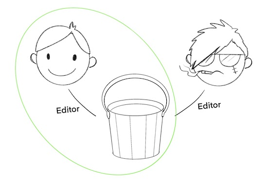
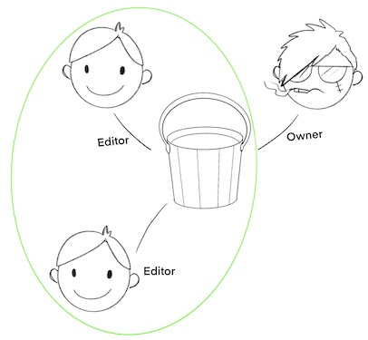
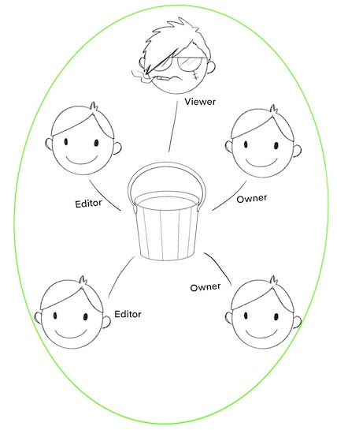
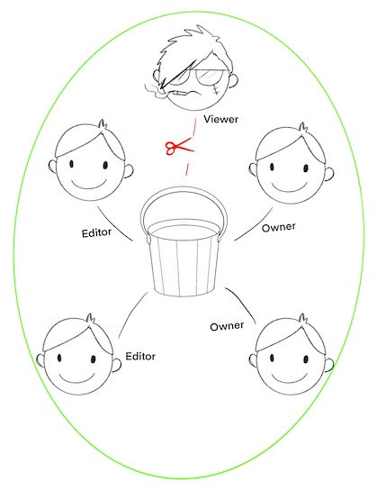

When you move into the infrastructure-as-code world, you soon begin to realise just how many individual access grants underpin your organisation. Every employee and service account has their individual permissions (either inherited or explicitly defined), and every asset in your cloud provider has their access policy (again, either granting access via inheritance/composition or explicitly); when you think to map that out as a graph, you'll soon see just how fiddly and time consuming it can be to define all of that as code. Compositional techniques, such as managing access via groups, rule matrices, inheritance etc can simplify the assignment of these permissions, but can be so simply undone by 'rogue' access grants done outside these preferred methods. It's the sort of challenge that might lead you to look for some convenient shortcuts to help get the ball rolling…
That is exactly what I want to talk about here, particularly how 2 of the IAM management 'helpers' in Terraform can undermine your IaC definitions in GCP and lure you into a false sense of security.
All IAM grants in GCP are managed through 'policies', which are the authoritative list of exactly which members (users, service accounts, groups etc) are granted which roles (editor, viewer, admin etc). The relationship between a list of members and a role is known as a binding. A policy is simply a collection of bindings. As with all the GCP APIs, it's real useful to check out the protobuf definitions for these APIs to see exactly how these types are defined.
// An example IAM policy, defined as JSON
{
"bindings": [{
"role": "roles/resourcemanager.organizationAdmin",
"members": [
"user:user1@example.com",
"group:admins@example.com",
]
}, {
"role": "roles/resourcemanager.organizationViewer",
"members": ["user:user2@example.com"],
}]
}
Updates to IAM done via gcloud or programmatically are generally performed by taking the current policy, and amending specific elements, like adding a new binding (which would add a new role w/members to the policy), or removing members from an existing binding. You'll notice that many assets in GCP, such as pubsub topics or logsinks will have allow you to retrieve their respective policies via their GCP client libraries so you can perform these operations yourself. While it might seem a little convoluted to need to manually amend policies like this, it has the huge benefit of always guaranteeing an authoritative access list. Terraform on the other hand, has a pair of helper resources that are designed to simplify this process, allowing you to define sections or individual elements of a policy, that are applied.
Using those might not be the best course of action.
The developers of the GCP provider for Terraform understood that many IAM grants could be conceptualised at the member or the binding level, so they created 2 new types of Terraform resources, iambinding resources and iammember resources.
An
iam_memberspecifies; a user (single) should have a role (single) on an asset (single)
Imagine you want to grant an employee editor access to a bucket; it seems convenient to specify simply the relationship between just the bucket and the user, using one of these Terraform iam_member resources, disregarding any other permissions that may have previously been assigned. I like to conceptualise this as a graph, with the member (the service account) and the asset (the bucket) as nodes, and the assigned role as the edge.
The goal of IaC is to define the actual state of an asset as code. All we've done in the above diagram is define a single edge of the graph, with no care for any other IAM grants that may already exist. The diagram below illustrates this by revealing there is actually another character with access to this bucket!

Our iam_member resource is highlighted in yellow, but we know it doesn't include any reference to this mysterious other character. Are they supposed to have access to this bucket? Were they granted permissions by hand? Is there a Terraform resource for this iam_member grant? It's tough to know, and the existence of IAM grants outside of our Terraform files means we lose all the benefits of trying to manage assets through Terraform in the first place.
An
iam_bindingspecifies; a role (single) should have X users (plural) for an asset (single).
iam_bindings behave similarly. We can manage more users this way (well, users of the same role at least), and there is a chance our plan will spot this mysterious character, if they happen to have been granted the same role our binding covers, but if their role differs, again, our Terraform plan will have no visibility on this mysterious character and their access.

We've seen both members and bindings are not authoritative; relying on only these to manage IAM on an asset does not guarantee the resources in our Terraform state actually match those of the asset. If we truly want Terraform to manage the IAM, including revoking all grants done outside of Terraform, we have to use policies. Policy resources in the Terraform GCP provider match the actual, underlying policy construct we looked at early; they include every role and every member who has been granted that role. Better yet, applying a policy removes any previously granted permissions that don't exist in the policy, allowing us to revoke access even for roles/users we we're aware were previously defined! If you're using policies, you can be confident running a plan will reveal any unexpected access grants.
If we revisit our earlier examples, but instead use a policy to manage our bucket, our policy will spot the mysterious character that has been granted access outside of Terraform. 
If we were to apply our policy, this mysterious character would lose their access to the bucket, which is exactly what we want if we're aiming to have our Terraform configuration be authoritative. 
Policies are powerful things, they cover not just your employees and service accounts, but also the service accounts generated by GCP (like any $PROJ_ID@appspot.gserviceaccount.com or $PROJ_ID@developer.gserviceaccount.com). Be sure to check your plans thoroughly, you'll be in for a world of pain if you revoke a critical service account's access to the services it needs to manage. Also, if you're running Terraform through some automated pipeline, take extra care to ensure you don't fully lose access to administer your asset! Both the service account applying the changes, and atleast 2 humans should maintain administrative permissions on each asset in case of emergencies.
Policies help you sleep better at night knowing that your Terraform state oversees all possible member/role grants associated to an asset. They will help you revoke rogue/manual access grants and help you spot unexpected grants. If you're using iam_members and iam_bindings, you should be aware of their shortcomings, and consider investing the time to map these permissions. The terraform import command makes this easy by taking your existing IAM policies (remember, all access in GCP is controled by policies under the hood) and converting them into HCL Terraform resources for you to include in your state.